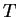
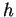

The top of the block file displays the time at which the process was initiated
and the control file used. This is followed by the parameter list. This list,
similar to the one output to STDOUT (see 4.2.1) includes the name
of the control file, the value of the threshold paremeter , the total number
of points in the grid, the total number of features in the dataset,
the total number of cells in the grid,
the proportion of cells that contain a point , the size of the
neighborhood  , the minimum block size to be reported, and the total number of
blocks found in the dataset.
, the minimum block size to be reported, and the total number of
blocks found in the dataset.
This is followed by individual tables for each block. Within each, there is an upper panel that lists the number of points and the associated contigs. And there is a lower panel that lists each point in the block in sequence. For each, the table shows the number of the point, the distance from the previous point, the names of the markers for the associated features (in the format markers for feature 1 markers for feature 2), and the product of the orientation of the point with the previous point in the block. This product may take a value of -1, 0 or 1. If values switch frequently between -1 and 1, then transcriptional orientation is not well-conserved within that block, and the user may wish to regard this block with suspicion. Zero indicates 'unknown'.
At the bottom of the blocks file, the number of blocks seen between each pair of contigs is reported. Below that, the length distribution of blocks is reported. For blocks with a given number of points, the observed and expected numbers of blocks are shown followed by the -value for blocks of that length. The -value is calculated as described in ([1])
| (4.1) |